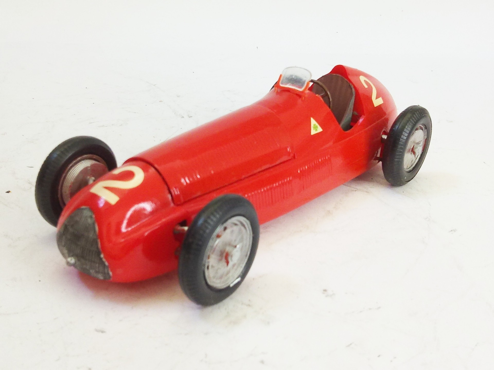
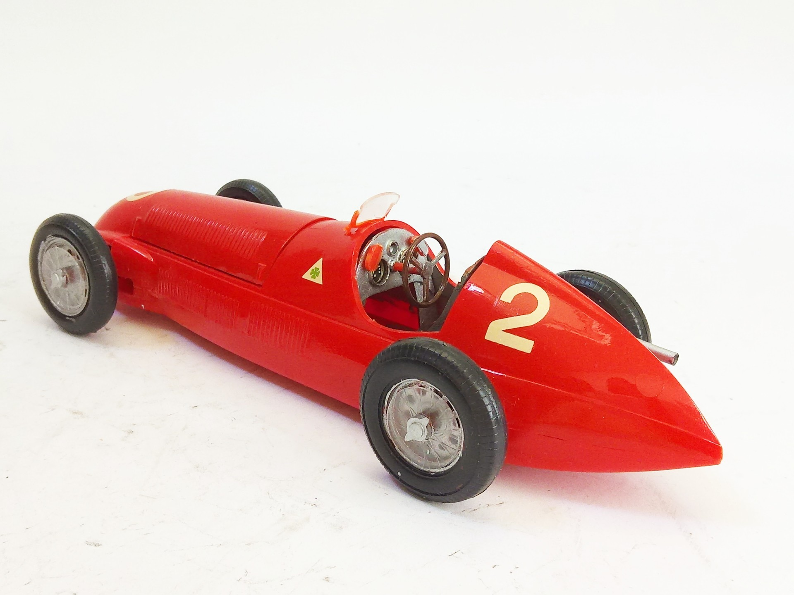

Auto e veicoli stradali · scale model archive
Alfa Romeo 154 Alfetta
Alfa Romeo 154 Alfetta — Kit: SMER, Scale: 1/24. 2 Giuseppe "Nino" Farina 1950 Italian Grand Prix - Italy (Result: 1st) #1/24 #SMER

Photo gallery

English description
2 Giuseppe "Nino" Farina 1950 Italian Grand Prix - Italy (Result: 1st)
#1/24 #SMER
Descrizione italiana
2 Giuseppe "Nino" Farina 1950 Italian Gran Premio - Italy (Result: 1st).